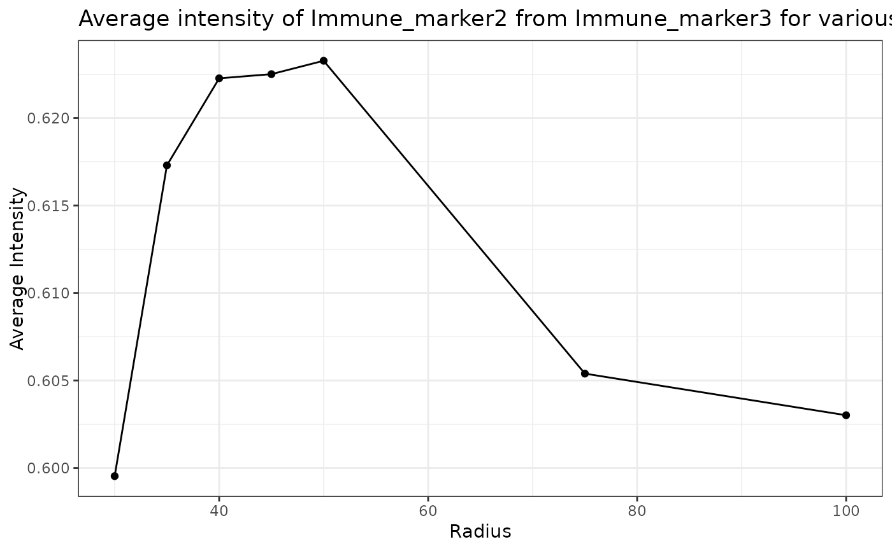

Takes in a vector or radii and calculates the average intensity of a target marker using average_intensity function. It plots the intensity level as a line graph.
plot_average_intensity(spe_object, reference_marker, target_marker, radii)SpatialExperiment object in the form of the output of
format_image_to_spe.
String specifying the reference marker.
String specifying the marker to calculate its average intensity.
Numeric Vector specifying the search radius around reference cells.
A plot is returned
plot_average_intensity(SPIAT::simulated_image, reference_marker="Immune_marker3",
target_marker="Immune_marker2", c(30, 35, 40, 45, 50, 75, 100))
